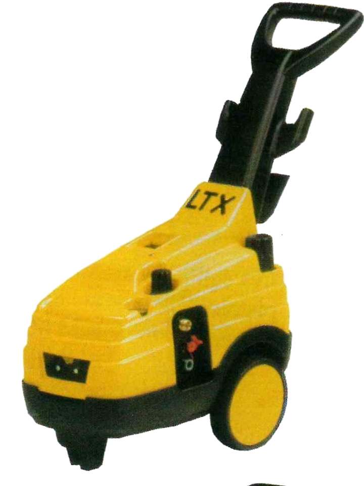
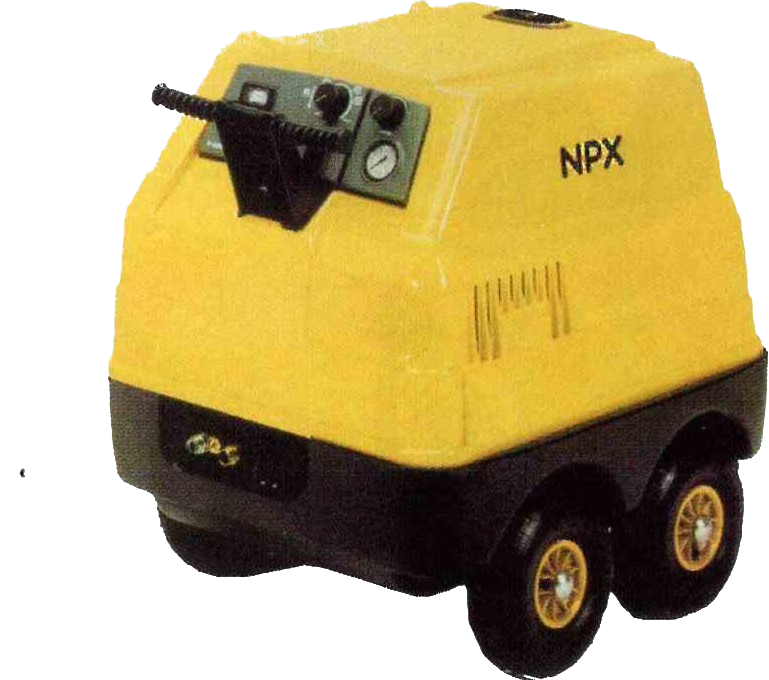
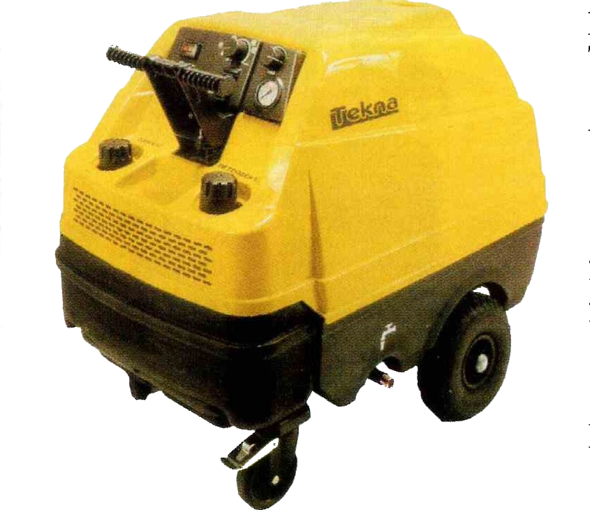
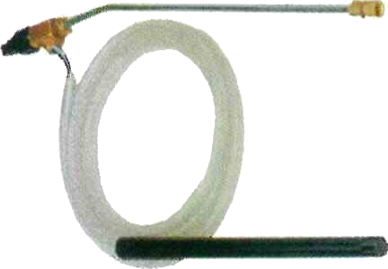

ons aanbod
Welkom op het aanbod van DVB Machinehandel, vakmannen met verstand van industriële machines. We stellen u met plezier onze online catalogus voor, waar u in een oogopslag een waaier aan industriële machines en onderdelen vindt die u bij ons kan kopen. Aarzel zeker niet om ons te contacteren bij vragen!
HOGE DRUK REINIGERS NETTOYEURS HAUTE PRESSION
HOBBY KOUD WATER HOGE DRUK REINIGERS NETTOYEURS HAUTE PRESSION EAU FROIDE HOBBY
-
- PARTNER 100
- 100
Werkdruk - Pression de travail
100 bar - 7 l/min met standaard lans/avec lance standard (164,1 €)
150 EWbar - 7 l/min met rotobuse/avec rotobuse (169,6 €)
Draagbare hoge druk reiniger. Drie cylinderpomp uitgerust met manometer, drukregelaar, regelbare sproeihoek, automatisch pistool + lans, 6 m hoge druk slang.
Nettoyeur haute pression portable. Pompe à 3 cylindres équipée de manomètre, régulateur de pression, jet règlable, pistolet automatique + lance, 6 m de tuyau haute pression.

-
- LW 120
- 120
Werkdruk - Pression de travail
120 bar - 8 l/min met standaard lans/avec lance standard (193,4 €)
170 EWbar - 8 l/min met rotobuse/avec rotobuse (198,8 €)
Verrijdbare hoge druk reiniger. Drie cylinderpomp uitgerust met manometer, drukregelaar, regelbare sproeihoek, automatisch pistool + lans, 6 m hoge druk slang en ingebouwde producttank.
Nettoyeur haute pression mobile. Pompe à 3 cylindres équipée de manomètre, régulateur de pression, jet règlable, pistolet automatique + lance, 6 m de tuyau haute pression et réservoir détergent incorporé.

-
- LAZER 130
- 130
Werkdruk - Pression de travail .
130 bar - 9 l/min met standaard lans/avec lance standard (321,3 €)
180 EWbar - 9 l/min met rotobuse/avec rotobuse (326,7 €)
Verrijdbare hoge druk reiniger. Drie cylinderpomp uitgerust met manometer, drukregelaar, regelbare sproeihoek, automatisch pistool + lans, 6 m hoge druk slang en ingebouwde producttank.
Nettoyeur haute pression mobile. Pompe à 3 cylindres équipée de manomètre, régulateur de pression, jet règlable, pistolet automatique + lance, 6 m de tuyau haute pression et réservoir détergent incorporé.

PROFESSIONELE KOUD WATER HOGE DRUK REINIGERS NETTOYEURS HAUTE PRESSION EAU FROIDE PROFESSIONNELS
-
- LWX
Werkdruk - Pression de travail
130 bar - 9 l/min monofasig/monophasé (597,4 €)
150 bar - 9 l/min drijfkracht/triphasé 220/380 V (611,8 €)
Drie cylinderpomp uitgerust met manometer, drukregelaar, automatisch pistool + lans, 8 m hoge druk slang en ingebouwde producttank.
Pompe à 3 cylindres équipée de manomètre, régulateur de pression, pistole automatique + lance, 8 m de tuyau haute pression et réservoir détergent incorporé.
-
- LTX
Werkdruk - Pression de travail
120 bar - 10 l/min monofasig/monophasé (829 €)
150 bar - 17 l/min drijfkracht/triphasé 220/380 V (954,4 €)
170 bar - 15 l/min drijfkracht/triphasé 220/380 V (954,4 €)
200 bar - 13 l/min drijfkracht/triphasé 220/380 V (954,4 €)
Drie cylinderpomp (interpump) uitgerust met manometer, drukregelaar, automatisch pistool + lans, 10 m hoge druk slang en ingbouwde producttank.
Pompe à 3 cylindres (interpump) équipée de manomètre, régulateur de pression, pistolet automatique + lance, 10 m de tuyau haute pression et réservoir détergent incorporé.
- 
-
- QUARK
Werkdruk - Pression de travail
150 bar - 15 l/min drijtkracht/triphasé 220/380 V (1181,7 €)
150 bar - 21 l/min drijfkracht/triphasé 220/380 V (1416 €)
200 bar - 15 l/min drijfkracht/triphasé 220/380 V (1395,2 €)
200 bar - 21 l/min drijfkracht/triphasé 220/380 V (1566,9 €)
Verkrijgbaar in optie met auto-stop uitvoering/Livrable en option avec auto-stop (120 €)
Drie cylinderpomp (interpump) uitgerust met manometer, drukregelaar, automatisch pistool + lans, 10 m hoge druk slang en ingebouwde product tank.
Pompe à 3 cylindres (interpump) équipée de manomètre, régulateur de pression, pistolet automatique + lance, 10 m de tuyau haute pression et réservoir détergent incorporé.
HOGE DRUK REINIGERS MET BENZINEMOTOR NETTOYEURS HAUTE PRESSION AVEC MOTEUR A ESSENCE
-
- THERMIC 3
- 3
Werkdruk - Pression de travail
110 bar - 540 l/uur 110 bar - 540 l/heure (616,3 €)
Motor Honda 3,5 PK. Drie cylinderpomp uitgerust met manometer, drukregelaar, automatisch pistool + lans, 6 m hoge druk slang.
Moteur Honda 3,5 CV. Pompe à 3 cylindres équipée de manomètre, régulateur de pression, pistolet automatique + lance, 6 m de tuyau haute pression.

-
- THERMIC 5
- 5
Werkdruk - Pression de travail
150 bar - 540 l/uur 150 bar - 540 l/heure (1318,8 €)
Motor Honda 5 PK. Drie cylinderpomp uitgerust met manometer, drukregelaar, automatisch pistool + lans, 10 m hoge druk slang.
Moteur Honda 5 CV. Pompe à 3 cylindres équipée de manomètre, régulateur de pression, pistolet automatique + lance, 10 m de tuyau haute pression.

-
- THERMIC 11
- 11
Werkdruk - Pression de travail
200 bar - 960 l/uur - 200 bar - 960 l/heure (2518,6 €)
Motor Honda 11 PK. Drie cylinderpomp uitgerust met manometer, drukregelaar, automatisch pistool + lans, 10 m hoge druk slang.
Moteur Honda 11 CV. Pompe à 3 cylindres équipée de manomètre, régulateur de pression, pistolet automatique + lance, 10 m de tuyau haute pression.

WARM WATER MOGE DRUK REINIGERS NETTOYEURS HAUTE PRESSION EAU CHAUDE
-
- JETFIRE 100
- 100
Werkdruk - Pression de travail
100 bar - 440 l/uur 100 bar - 440 l/heure (899,9 €)
Drie cylinderpomp uitgerust met manometer, drukregelaar, automatisch pistool + lans, 8 m hoge druk slang. Temperatuur water max 90 ° C.
Pompe à 3 cylindres équipée de manomètre, régulateur de pression, pisto automatique + lance, 8 m de tuyau haute pression. Température max 90 ° C.

-
- vulker 120
- 120
Werkdruk - Pression de travail
120 bar - 510 l/uur - 120 bar - 510 l/heure (1018,8 €)
Drie cylinderpomp uitgerust met manometer, drukregelaar, automatisch pistool + lans, 8 m hoge druk slang en ingebouwde producttank. Temperatuur traploos regelbaar van 30 ° tot 90 ° C.
Pompe à 3 cylindres équipée de manomètre, régulateur de pression, pistc automatique + lance, 8 m de tuyau haute pression et réservoir détergent incorporé.Température règlable entre 30 ° et 90 ° C.

PROFESSIONELE WARM WATER HOGE DRUK REINIGERS NETTOYEURS HAUTE PRESSION EAU CHAUDE PROFESSIONNELS
-
- NPX - LKX
Werkdruk - Pression de travail :
NPX 130 bar - 9 l/min monofasig/monophasé (1368,4 €)
NPX 150 bar - 9 l/min drijfkracht/triphasé 220/380 V (1368,4 €)
LKX 150 bar - 11 l/min drijfkracht/triphasé 220/380 V (1472,5 €)
LKX 150 bar - 15 l/min drijfkracht/triphasé 220/380 V (1715,4 €)
Drie cylinderpomp uitgerust met manometer, drukregelaar, automatisch pistool + lans, 10 m hoge druk slang en ingebouwde producttank. Temperatuur traploos regelbaar van 30 ° tot 140 ° C.
Pompe à 3 cylindres équipée de manomètre, régulateur de pression, pistole automatique + lance, 10 m de tuyau haute pression et réservoir détergent incorporé. Température règlable entre 30 ° et 140 ° C.
- 
-
- TEKNA
Werkdruk - Pression de travail
120 bar - 11 l/min monofasig/monophasé (1913,7 €)
150 bar - 15 l/min drijfkracht/triphasé 220/380 V (1960,8 €)
200 bar - 15 l/min drijfkracht/triphasé 220/380 V (2193,9 €)
200 bar - 21 l/min drijfkracht/triphasé 220/380 V (2806,2 €)
OPTIE OPTION
Ontkalker + total stop / anti-calcaire + total stop (195,1 €)
Drie cylinderpomp uitgerust met manometer, drukregelaar, automatisch pistool + lans, 10 m hoge druk slang en ingebouwde producttank. Temperatuur traploos regelbaar van 30 ° tot 140 ° C.
Pompe à 3 cylindres équipée de manomètre, régulateur de pression, pistole automatique + lance, 10 m de tuyau haute pression et réservoir détergent incorporé. Température règlable entre 30 ° et 140 ° C.
- 
AUTONOME VERSTUIVERS PULVERISATEURS AUTONOMES
-
Hoge druk sproeier 1/4" of 1/8"
Gicleur 1/4" ou 1/8". (7,9 €)

-
Ontstoppingskop
Tête de débouchage (30 €)
-
Zandstraalset
Set de sablage (97,9 €)
- 
-
Hoge druk slang 10 m 1/4" - 200 bar
Tuyau haute pression 10 m 1/4" - 200 bar (69,2 €)
Hoge druk slang 10 m 5/16" - 200 bar
Tuyau haute pression 10 m 5/16" - 200 bar (73,4 €)
Hoge druk slang 10 m 3/8" - 200 bar
Tuyau haute pression 10 m 3/8" - 200 bar (79,6 €)
Hoge druk slang 10 m 3/8" - 400 bar
Tuyau haute pression 10 m 3/8" - 400 bar (92,7 €)

-
Inox lans kort - Lance courte en inox (39,4 €)
Inox lans midden - Lance moyenne en inox (51,6 €)
Inox lans lang - Lance longue en inox (62,5 €)
-
Hoge druk pistool 250 bar
Pistolet haute pression 250 bar (44,1 €)

-
- MV 13
- 13
Metalen draagbare verstuiver. Inhoud : 13 l.
Pulvérisateur métallique portable. Contenance : 13 l. (131,1 €)

-
- MV 24
- 24
Metalen verrijdbare verstuiver. Inhoud : 24 l.
Pulvérisateur métallique mobile. Contenance : 24 l. (160,9 €)

-
- MV 50
- 50
Metalen verrijdbare verstuiver. Inhoud : 24 l.
Pulvérisateur métallique mobile. Contenance : 24 l. (160,9 €)
-
- IV 24
- 24
Inox verrijdbare verstuiver. Inhoud : 24 l.
Pulvérisateur mobile en inox. Contenance : 24 l. (294 €)

-
- Inox lans - Lance en inox 50 cm (27,8 €)
- Inox lans - Lance en inox 75 cm (30,5 €)
- Inox lans - Lance en inox 120 cm (33,5 €)
- Spiraal slang - Tuyau spiral 7,5 m (16,6 €)
- Spiraal slang - Tuyau spiral 10 m (20,1 €)

INDUSTRIELE STOF- EN WATERZUIGERS ASPIRATEURS INDUSTRIELS EAU ET POUSSIERE
-
- MAX
Stof + waterzuiger 1080 Watt. Inhoud tank 20 l.
Aangezogen lucht 170 m3/uur - 2200 mm onderdruk. (135 €)
Aspirateur eau/poussière 1080 Watt. Contenance réservoir 20 l.
Air aspiré 170 m3/heure - Dépression 2200 mm.
-
- FULL DRY
Stofzuiger 900 Watt. Inhoud tank 24 l.
Aangezogen lucht 140 m3/uur - 1800 mm onderdruk. (176 €)
Aspirateur poussière 900 Watt. Contenance réservoir 24 l.
Air aspiré 140 m3/heure - Dépression 1800 mm.

-
- OLIPMPIC
Stof + waterzuiger 1080 Watt. Inhoud tank 32 l.
Aangezogen lucht 170 m3/uur - 2200 mm onderdruk. (222 €)
Aspirateur eau/poussière 1080 Watt. Contenance réservoir 32 l.
Air aspiré 170 m3/heure - Dépression 2200 mm.
-
- DOMUS
Stof + waterzuiger 2 x 1080 Watt (2160 Watt).
Inhoud tank 78 l kantelbaar. Aangezogen lucht 340 m3/uur 2200 mm onderdruk. (439 €)
Aspirateur eau/poussière 2 x 1080 Watt (2160 Watt).
Contenance réservoir pivotant 78 l.
Air aspiré 340 m3/heure Dépression 2200 mm.
-
- TAURUS
Stof + waterzuiger 3 x 1080 Watt (3240 Watt).
Inhoud tank 78 l kantelbaar. Aangezogen lucht 510 m3/uur 2200 mm onderdruk. (536,2 €)
Aspirateur eau/poussière 3 x 1080 Watt (3240 Watt).
Contenance réservoir pivotant 78 l. Air aspiré 510 m3 /heure Dépression 2200 mm.
-
- ATHENA
Tapijtreiniger 1080 Watt. Inhoud tank 32l.
Pomp 70 Watt - 3,5 bar - 1 l/min.
Aangezogen lucht 170 m3/uur - 2200 mm onderdruk. (426,9 €)
Lave moquette 1080 Watt. Contenance réservoir 32l.
Pompe 70 Watt - 3,5 bar - 1 l/min.
Air aspiré 170 m3/heure - Dépression 2200 mm.